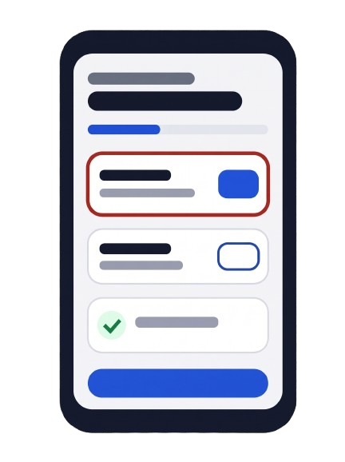
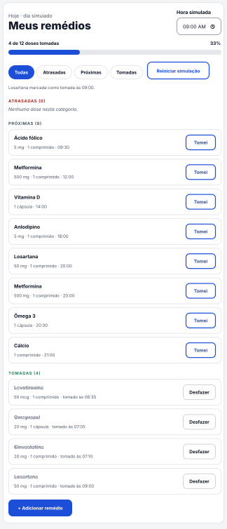
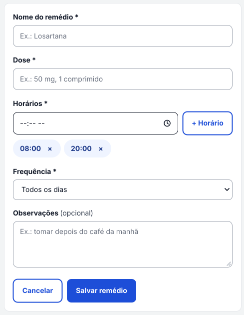

Nunca mais esqueça de tomar um remédio.
O ZELO é um lembrete de medicamentos simples e acessível, pensado para quem toma vários remédios por dia e não pode errar o horário.
Quem é o cidadão?
Dona Maria, 68 anos
Persona criada para o projeto. Tem hipertensão e diabetes, toma cinco remédios em horários diferentes e mora sozinha. Usa o celular, mas prefere telas grandes e com poucas opções.
Quem cuida dela
Filhos e cuidadores que querem ter certeza de que a dose foi tomada, sem precisar ligar várias vezes ao dia.
Qual problema ele enfrenta?
Quem trata uma doença crônica precisa seguir o tratamento todos os dias, por anos. Esquecer doses ou trocar horários é muito comum.
~ 50 %
Em países desenvolvidos, apenas cerca de metade dos pacientes com doenças crônicas segue o tratamento como foi prescrito. Nos países em desenvolvimento, a Organização Mundial da Saúde (OMS) avalia que o índice tende a ser ainda menor.
Fonte: OMS 2003. Adherence to long-term therapies: evidence for action.
No Brasil, o público que mais precisa de apoio cresce:
o Censo 2022 do IBGE contou mais de 32 milhões de pessoas
com 60 anos ou mais.
Fonte: IBGE, Censo Demográfico 2022
Nossa Proposta
Um aplicativo web com a lista de doses do dia, destaque para o que está atrasado e um botão grande de "Tomei".
- Cadastro rápido de remédio, dose, horários e frequência.
- Barra de progresso mostrando quantas doses do dia já foram tomadas.
- Alertas visuais para doses atrasadas, com cores e texto (não só cor).
ODS ligados à solução
BEM-ESTAR
ODS 3 · Saúde e Bem-Estar. Ajuda no tratamento correto de doenças crônicas.
DESIGUALDADES
ODS 10 · Redução das Desigualdades. Interface simples e acessível para idosos e pessoas com pouca familiaridade com tecnologia.
SIMULAÇÃO INTERATIVA
Como o ZELO funciona
Teste abaixo: marque as doses como tomadas, mude a hora simulada e veja o status e o progresso mudarem na hora.

Passo a passo
- A pessoa cadastra o remédio, a dose e os horários.
- O ZELO monta a lista do dia e separa em atrasadas, próximas e tomadas.
- Ao tomar, ela toca em "Tomei" e a barra de progresso é atualizada.
Remédios cadastrados na página "Adicionar remédio" aparecem aqui automaticamente.
Adicionar remédio
Preencha os dados. Campos com * são obrigatórios.

QUEM FEZ
Nossa Equipe
Projeto desenvolvido para a Global Solution 2026/2 · CitizenTech, FIAP.
Integrantes
1
Nome do integrante 1
RM [0000000]
2
Nome do integrante 2
RM [0000000]
3
Nome do integrante 3
RM [0000000]
4
Nome do integrante 4
RM [0000000]
5
Nome do integrante 5
RM [0000000]
Pitch do projeto
Assista ao vídeo de apresentaçãoImpacto do ZELO
Como a solução ajuda o cidadão e como pretendemos medir esse resultado.
Antes e depois
Comparação da rotina de medicação da Dona Maria
| Situação | Sem o ZELO | Com o ZELO |
|---|---|---|
| Lembrar do horário | Depende da memória ou de papéis colados na geladeira. | Lista do dia com destaque para o que está atrasado. |
| Saber se já tomou | Dúvida frequente; risco de repetir ou pular a dose. | Histórico do dia com o horário em que cada dose foi tomada. |
| Acompanhamento | Familiares precisam ligar para perguntar. | Barra de progresso mostra rapidamente o andamento do dia. |
Como vamos medir
Doses tomadas no dia
Percentual de doses marcadas como "Tomei" em relação ao total programado.
Doses atrasadas
Quantidade de doses que passaram do horário sem confirmação.
Facilidade de uso
Teste com pessoas idosas: elas conseguem cadastrar um remédio sozinhas?
Indicadores de acompanhamento do protótipo, ainda sem dados de uso real.
Contribuição para os ODS
BEM-ESTAR
ODS 3. Apoia a meta 3.4, de reduzir a mortalidade prematura por doenças crônicas não transmissíveis por meio da prevenção e do tratamento.
DESIGUALDADES
ODS 10. Apoia a meta 10.2, de promover a inclusão de todos, com atenção a idosos e pessoas com baixa familiaridade digital.
Fonte das metas: Nações Unidas Brasil, Objetivos de Desenvolvimento Sustentável ( brasil.un.org/pt-br/sdgs ).